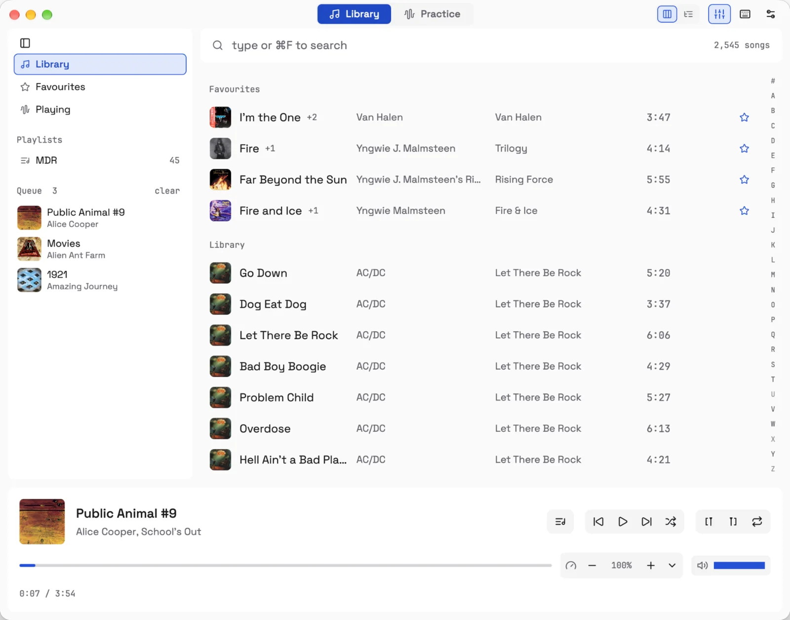
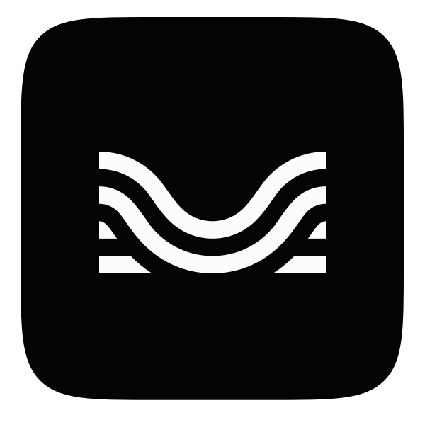
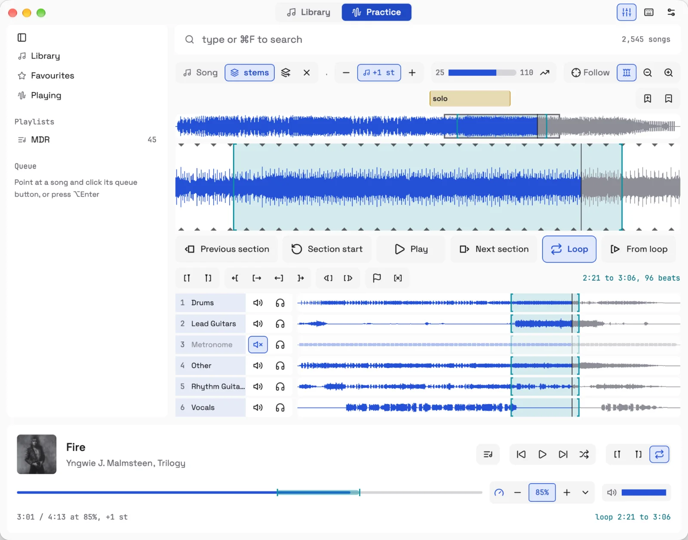

A music player and a practice tool in one. Listen to your own library, or loop the solo, slow it down, mute the guitar and play along.
Odeion plays the music folder you already have. Your songs stay where they are; it never writes next to them.
Opens instantly, even with thousands of songs.
Search as you type, or browse albums, artists and favourites.
A queue, playlists and a 10-band EQ.

Press Tab on a song and the list makes way for its waveform.
Drag across the waveform to loop a part. Loops are gapless and snap to the beats, even on old records that drift.
Slow down or change key, one without the other. The speed trainer brings the loop up to speed a few percent at a time.
Drop in stems from 
Name sections and drop a marker. Every song comes back as you left it.

Keyboard first, with Mac or Vim keys. Every key is also a button, and ⌘? lists them.
No account. Odeion only goes online when you ask it to check for updates.
Keep a backing track or a live version next to a song and switch between them.
Plays mp3, flac, wav, aiff, m4a and ogg.
Five minutes, from adding a music folder to muting the guitar. Click a chapter to start there.
Apple charges 99 dollars a year to notarize an app, and Odeion is a free hobby project, so macOS blocks it the first time you open it. You only have to allow it once.
On macOS 13 and 14 it's quicker: right-click Odeion in Applications, choose Open, then Open again.
Or skip the clicking. Once Odeion is in Applications, run:
xattr -dr com.apple.quarantine /Applications/Odeion.app
Unzip and run odeion.exe. When Windows says it protected your PC, click
More info, then Run anyway. Ctrl does what ⌘ does on a Mac.
I learned songs with Transcribe! for years, but finding a file in it is painful. Odeion started as a way to find songs for it, and grew until it did everything I used Transcribe! for. Keeping backing tracks and stems next to the original is an idea from Moises. The source is on GitHub, free for noncommercial use.